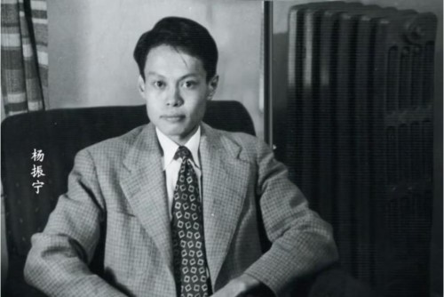

宇称不守恒
1956 年与李政道合作提出弱相互作用中宇称不守恒理论，次年由吴健雄实验证实，两人共获 1957 年诺贝尔物理学奖。

诺贝尔物理学奖得主 · 世界著名理论物理学家
杨振宁，1922 年生于安徽合肥，世界著名理论物理学家。1938 年考入西南联合大学， 1945 年赴美求学，先后在普林斯顿高等研究院、石溪纽约州立大学等地从事研究， 是 20 世纪最重要的物理学家之一。
他的学术成就深刻改变了人类对物质世界的认识。晚年他回到清华园定居， 为中国物理学研究和人才培养倾注了大量心血。
1956 年与李政道合作提出弱相互作用中宇称不守恒理论，次年由吴健雄实验证实，两人共获 1957 年诺贝尔物理学奖。
1954 年与米尔斯共同提出规范场论，成为现代粒子物理"标准模型"的理论基石，影响深远。
长期推动中美学术交流，倡议创办清华大学高等研究院，为培养中国顶尖物理人才作出了重要贡献。
我一生最重要的贡献，是帮助中国人克服了觉得自己不如人的心理。